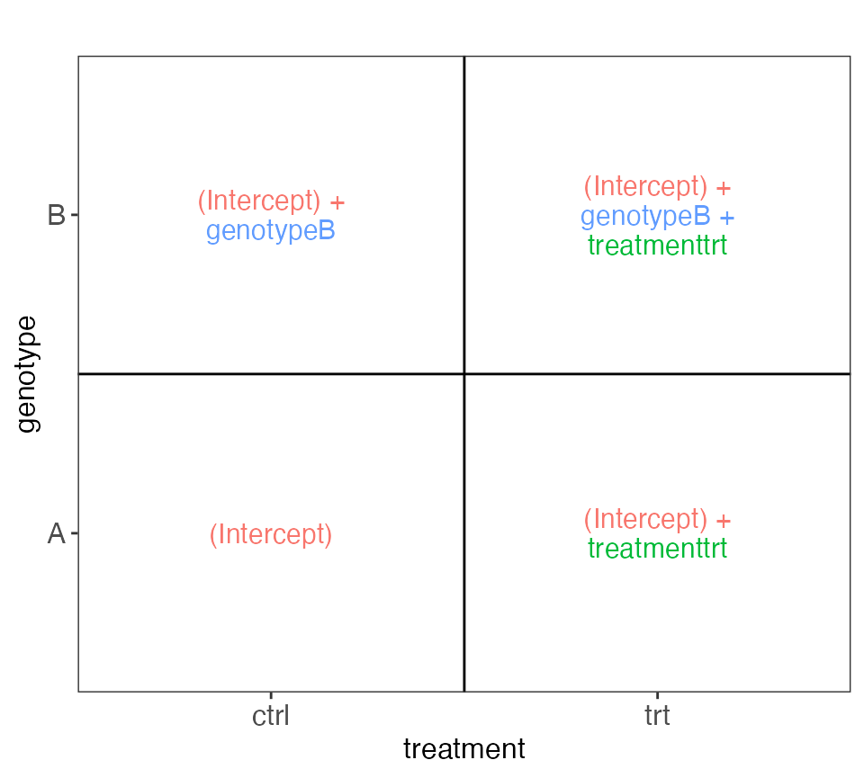

Interactive exploration of design matrices with ExploreModelMatrix
Charlotte Soneson, Federico Marini, Michael I Love, Florian Geier and Michael B Stadler
2022-11-01
Source:vignettes/ExploreModelMatrix.Rmd
ExploreModelMatrix.RmdIntroduction
ExploreModelMatrix is an R package for visualizing
design matrices generated by the model.matrix() R function.
Provided with a sample information table and a design formula, the
ExploreModelMatrix() function launches a shiny app where
the user can explore the fitted values (in terms of the model
coefficients) for each combination of predictor values. In addition, the
app allows the user to interactively change the design formula and the
reference levels of factor variables as well as drop unwanted columns
from the design matrix, in order to explore the effect on the
composition of the fitted values. Note that
ExploreModelMatrix is not intended to be used to determine
which design formula that should be used for analyzing a data
set. Instead, its purpose is to assist in the interpretation of the
coefficients in a given model.
In addition to the interactive visualization,
ExploreModelMatrix also provides a function,
VisualizeDesign(), for generating static
visualizations.
In this vignette, we illustrate how the package can be used by showing examples of applying the functions to various experimental design setups. Many examples are taken from questions raised at the Bioconductor support site.
Interface
The ExploreModelMatrix() function opens a graphical
interface where the user can interactively explore the provided design.
This section gives an overview of what is shown in the graphical
interface. A step-by-step tour is also available by clicking on the
icon in the top right of the
application.

The sidebar contains the input controls. The design formula of
interest is typed into the Design formula text box, and
must start with the ~ symbol. It can be changed
interactively while using the application. If the
ExploreModelMatrix() function is called with
sampleData=NULL, there will also be an input control
allowing a tab-delimited text file with sample information to be
uploaded to the application. Finally, the package contains a collection
of example designs, suitable for teaching, exploration and illustration.
The remaining input controls allow the user to change the reference
levels of the factor variables, to drop specific columns from the design
matrix, and to change the display settings of the plots.
The first row of the main body of the application displays the fitted values (expressed in terms of the model coefficients) for each combination of predictor values, in both figure and table form. In the next row, the full provided sample table as well as a summary are provided, and the third row displays the full design matrix as well as its rank. Panels below this display the pseudoinverse of the design matrix, a visualization of variance inflation factors, a co-occurrence matrix and the correlation among the model coefficients.
Examples
This section contains a number of examples of real designs, and shows
how they can be explored with ExploreModelMatrix. For each
example, the sample information table is printed out. Next, the
VisualizeDesign() function is called to generate a static
plot of the fitted values, in terms of the model coefficients. This is
the same plot that is displayed in the top left panel of the interactive
interface generated by ExploreModelMatrix(). We also
provide the code for generating and (for interactive sessions) opening
the interactive application with ExploreModelMatrix().
Example 1
This example illustrates a two-factor design (genotype and
treatment), where the effect of the genotype and treatment are assumed
to be additive. For each genotype, two treated and two control
individuals are studied. The design formula is
~ genotype + treatment, reflecting the assumption of
additivity between the two predictors. The figure generated by the
VisualizeDesign() function, displayed below, shows the
value of the linear predictor (or, for a regular linear model, the
fitted values) for observations with a given combination of predictor
values, in terms of the model coefficients. This can be useful in order
to set up suitable contrasts. For example, we can see that testing the
null hypothesis that the genotypeB coefficient is zero
would correspond to comparing observations with genotype B and those
with genotype A.
(sampleData <- data.frame(genotype = rep(c("A", "B"), each = 4),
treatment = rep(c("ctrl", "trt"), 4)))
#> genotype treatment
#> 1 A ctrl
#> 2 A trt
#> 3 A ctrl
#> 4 A trt
#> 5 B ctrl
#> 6 B trt
#> 7 B ctrl
#> 8 B trt
vd <- VisualizeDesign(sampleData = sampleData,
designFormula = ~ genotype + treatment,
textSizeFitted = 4)
cowplot::plot_grid(plotlist = vd$plotlist)
app <- ExploreModelMatrix(sampleData = sampleData,
designFormula = ~ genotype + treatment)
#> The `name` provided ('') does not correspond to a known icon
#> The `name` provided ('hand-o-right') does not correspond to a known icon
#> The `name` provided ('question-circle fa-1g') does not correspond to a known icon
if (interactive()) shiny::runApp(app)Example 2
From https://support.bioconductor.org/p/121132/. In this
example we are considering a set of patients, each being either
Resistant or Sensitive to a treatment, and each studied before (pre) and
after (post) treatment. Patients have been renumbered within each
response group, and patients with only pre- or post-measurements are
removed. We use the design
~ Response + Response:ind.n + Response:Treatment. As can be
seen from the visualization below, this lets us easily compare e.g.
post- vs pre-treatment observations within the Sensitive group (via the
ResponseSensitive.Treatmentpre coefficient).
(sampleData <- data.frame(
Response = rep(c("Resistant", "Sensitive"), c(12, 18)),
Patient = factor(rep(c(1:6, 8, 11:18), each = 2)),
Treatment = factor(rep(c("pre","post"), 15)),
ind.n = factor(rep(c(1:6, 2, 5:12), each = 2))))
#> Response Patient Treatment ind.n
#> 1 Resistant 1 pre 1
#> 2 Resistant 1 post 1
#> 3 Resistant 2 pre 2
#> 4 Resistant 2 post 2
#> 5 Resistant 3 pre 3
#> 6 Resistant 3 post 3
#> 7 Resistant 4 pre 4
#> 8 Resistant 4 post 4
#> 9 Resistant 5 pre 5
#> 10 Resistant 5 post 5
#> 11 Resistant 6 pre 6
#> 12 Resistant 6 post 6
#> 13 Sensitive 8 pre 2
#> 14 Sensitive 8 post 2
#> 15 Sensitive 11 pre 5
#> 16 Sensitive 11 post 5
#> 17 Sensitive 12 pre 6
#> 18 Sensitive 12 post 6
#> 19 Sensitive 13 pre 7
#> 20 Sensitive 13 post 7
#> 21 Sensitive 14 pre 8
#> 22 Sensitive 14 post 8
#> 23 Sensitive 15 pre 9
#> 24 Sensitive 15 post 9
#> 25 Sensitive 16 pre 10
#> 26 Sensitive 16 post 10
#> 27 Sensitive 17 pre 11
#> 28 Sensitive 17 post 11
#> 29 Sensitive 18 pre 12
#> 30 Sensitive 18 post 12
vd <- VisualizeDesign(
sampleData = sampleData,
designFormula = ~ Response + Response:ind.n + Response:Treatment,
textSizeFitted = 3
)
cowplot::plot_grid(plotlist = vd$plotlist, ncol = 1)
app <- ExploreModelMatrix(
sampleData = sampleData,
designFormula = ~ Response + Response:ind.n + Response:Treatment
)
#> The `name` provided ('') does not correspond to a known icon
#> The `name` provided ('hand-o-right') does not correspond to a known icon
#> The `name` provided ('question-circle fa-1g') does not correspond to a known icon
if (interactive()) shiny::runApp(app)The design above doesn’t allow comparison between Resistant and
Sensitive patients while accounting for the patient effect, since the
patient is nested within the response group. If we choose to ignore the
patient effect, we can fit a factorial model with the design formula
~ Treatment + Response, as illustrated below.
vd <- VisualizeDesign(sampleData = sampleData,
designFormula = ~ Treatment + Response,
textSizeFitted = 4)
cowplot::plot_grid(plotlist = vd$plotlist, ncol = 1)Example 3
From https://support.bioconductor.org/p/80408/. Here we are
considering mice from two conditions (ctrl/ko), each measured with and
without treatment with a drug (plus/minus). We use the design
~ 0 + batch + condition (where batch
corresponds to the mouse ID), and drop the column corresponding to
conditionko_minus to get a full-rank design matrix.
(sampleData = data.frame(
condition = factor(rep(c("ctrl_minus", "ctrl_plus",
"ko_minus", "ko_plus"), 3)),
batch = factor(rep(1:6, each = 2))))
#> condition batch
#> 1 ctrl_minus 1
#> 2 ctrl_plus 1
#> 3 ko_minus 2
#> 4 ko_plus 2
#> 5 ctrl_minus 3
#> 6 ctrl_plus 3
#> 7 ko_minus 4
#> 8 ko_plus 4
#> 9 ctrl_minus 5
#> 10 ctrl_plus 5
#> 11 ko_minus 6
#> 12 ko_plus 6
vd <- VisualizeDesign(sampleData = sampleData,
designFormula = ~ 0 + batch + condition,
textSizeFitted = 4, lineWidthFitted = 20,
dropCols = "conditionko_minus")
cowplot::plot_grid(plotlist = vd$plotlist, ncol = 1)
app <- ExploreModelMatrix(sampleData = sampleData,
designFormula = ~ batch + condition)
#> The `name` provided ('') does not correspond to a known icon
#> The `name` provided ('hand-o-right') does not correspond to a known icon
#> The `name` provided ('question-circle fa-1g') does not correspond to a known icon
if (interactive()) shiny::runApp(app)Session info
sessionInfo()
#> R version 4.2.2 (2022-10-31)
#> Platform: x86_64-apple-darwin17.0 (64-bit)
#> Running under: macOS Big Sur ... 10.16
#>
#> Matrix products: default
#> BLAS: /Library/Frameworks/R.framework/Versions/4.2/Resources/lib/libRblas.0.dylib
#> LAPACK: /Library/Frameworks/R.framework/Versions/4.2/Resources/lib/libRlapack.dylib
#>
#> locale:
#> [1] en_US.UTF-8/en_US.UTF-8/en_US.UTF-8/C/en_US.UTF-8/en_US.UTF-8
#>
#> attached base packages:
#> [1] stats graphics grDevices utils datasets methods base
#>
#> other attached packages:
#> [1] ExploreModelMatrix_1.11.0
#>
#> loaded via a namespace (and not attached):
#> [1] Rcpp_1.0.9 tidyr_1.2.1 rprojroot_2.0.3
#> [4] digest_0.6.30 utf8_1.2.2 mime_0.12
#> [7] R6_2.5.1 stats4_4.2.2 evaluate_0.17
#> [10] highr_0.9 ggplot2_3.3.6 pillar_1.8.1
#> [13] rlang_1.0.6 fontawesome_0.4.0 jquerylib_0.1.4
#> [16] S4Vectors_0.35.4 DT_0.26 rmarkdown_2.17
#> [19] pkgdown_2.0.6.9000 textshaping_0.3.6 desc_1.4.2
#> [22] shinyjs_2.1.0 stringr_1.4.1 htmlwidgets_1.5.4
#> [25] munsell_0.5.0 shiny_1.7.3 compiler_4.2.2
#> [28] httpuv_1.6.6 xfun_0.34 pkgconfig_2.0.3
#> [31] systemfonts_1.0.4 BiocGenerics_0.43.4 htmltools_0.5.3
#> [34] tidyselect_1.2.0 tibble_3.1.8 fansi_1.0.3
#> [37] dplyr_1.0.10 withr_2.5.0 later_1.3.0
#> [40] MASS_7.3-58.1 grid_4.2.2 jsonlite_1.8.3
#> [43] xtable_1.8-4 gtable_0.3.1 lifecycle_1.0.3
#> [46] magrittr_2.0.3 scales_1.2.1 cli_3.4.1
#> [49] stringi_1.7.8 cachem_1.0.6 farver_2.1.1
#> [52] fs_1.5.2 promises_1.2.0.1 limma_3.53.11
#> [55] bslib_0.4.0 ellipsis_0.3.2 ragg_1.2.4
#> [58] generics_0.1.3 vctrs_0.5.0 cowplot_1.1.1
#> [61] tools_4.2.2 glue_1.6.2 purrr_0.3.5
#> [64] crosstalk_1.2.0 fastmap_1.1.0 yaml_2.3.6
#> [67] colorspace_2.0-3 rintrojs_0.3.2 shinydashboard_0.7.2
#> [70] memoise_2.0.1 knitr_1.40 sass_0.4.2